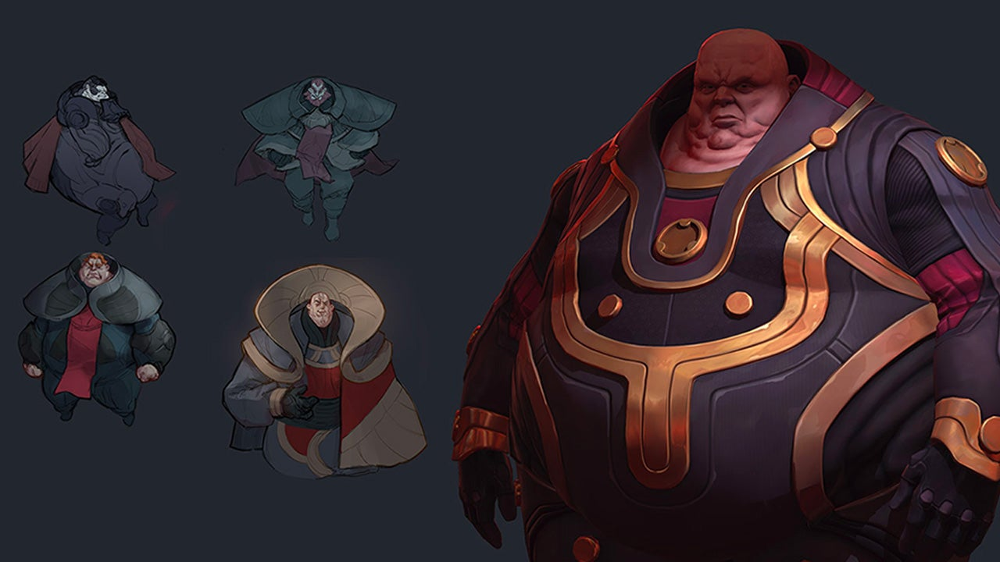

The RTS makes a glorious return to the sands of Arrakis.

It's been a while since we've visited the Dune universe in a real-time strategy game – I thought the iPod was basically sorcery when Emperor: Battle for Dune came out in 2001 – but even in its early access form, Dune: Spice Wars is shaping up to be a triumphant return. Four distinct factions that all engage a little differently with interesting combat, politics, and exploration make for an exciting time on the beautifully deadly world of Arrakis. And more impressive still, it never made me feel like I need to be a highly trained Mentat mastermind to keep track of it all. Spice Wars is a bit more of a traditional RTS than developer Shiro Games' last project, Northgard, which shared a lot of elements with worker placement tabletop games. But a return to the old formula isn’t necessarily a bad thing, and its well-balanced resource mechanics are still at the heart of everything. Whether it's manpower, political influence, or the all-important spice, I never fell into a rut in this glimmering desert where I felt like I had enough of everything. Spice Wars always keeps you hungering for something, which can lead to conflict even with a long-time ally if they just happen to get to that juicy spice field you were eyeing before you can.
Combat is relatively simple but satisfying. Until you get pretty deep into the military tech tree your army size will be limited to only a handful, which makes microing your units crucial in an even fight. I appreciate how this raises the skill cap significantly without having to worry about a giant, indecipherable blob of soldiers. And each faction fights a bit differently, from the relatively straightforward Atreides legions who get bonuses for ganging up on a single enemy, to the elusive Fremen who can cause a lot of delightful havoc by cleverly leveraging small squads of stealthy infiltrators. The added danger of the Shai Hulud introduces further tense and engaging considerations to each battle, especially in the late game. Why? Because having large groups of soldiers fighting over a small area risks getting them all turned into worm food.
Because of those differences each faction has some distinct flavor to their tactics, with the brutish Harkonnens relying on strong military garrisons to squeeze additional productivity out of their workforce, and the Fremen’s advantageous ability to collect precious spice without noisy, mechanical harvesters that tend to attract trouble of the giant death worm variety. Of course, you can never actually remove the threat of the worms, so you have to learn to live with them. I really like how this reminds you that no matter how powerful you get, you still have to bow to Arrakis' unforgiving rules. In this way, the planet really comes alive and becomes a character of its own, supported by gleaming stretches of dunes in the daytime and an eerily quiet, almost meditative sea of twinkling blue at night. The look of the units and buildings is a bit cartoonishly stylized, but putting everything together, it's gorgeous.